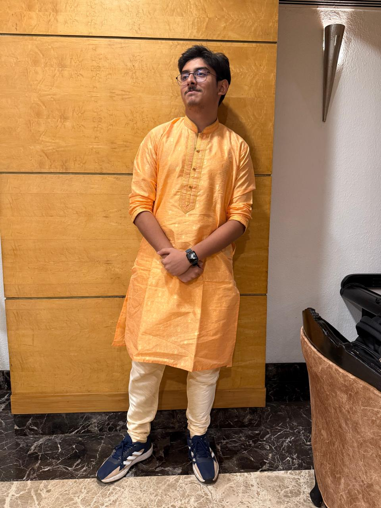

Secretary-General's Speech
Before I discovered MUNs, I genuinely believed diplomacy was just a fancy word for people arguing politely in expensive suits. A few conferences later, I realised it was actually people arguing not-so-politely in formal attire while somehow finding solutions in the chaos. Somewhere in between the speeches, crises, sleepless nights, and occasional diplomatic disasters, I found a community that challenged me to think, lead, and grow. That spirit is what ClaroMUN 2026 stands for.
Now in its third edition, ClaroMUN is more than just a conference—it is a platform where ideas are tested, perspectives are challenged, and future leaders discover their voices. Whether you are a first-time delegate nervously preparing your opening speech or a seasoned MUNer already planning your next Point of Information, there is something here for everyone.
As Secretary-General, I can promise you one thing: our team has poured countless hours, far too many cups of coffee, and an unreasonable amount of passion into making this conference an unforgettable experience. The rest is up to you. Debate fiercely, negotiate wisely, make new friends, and don't be afraid to take risks.
On behalf of the Secretariat, I welcome you to the 3rd Edition of ClaroMUN 2026. I hope you leave with more than just certificates and awards—I hope you leave with memories, lessons, and stories you'll be telling long after the final gavel falls.
See you in committee.
Aditya Banik
Secretary-General
ClaroMUN 2026